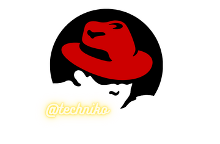

Red Hat Software: Complete Guide – History, Products, Founding, and More

The History of Red Hat Software: What To Know
Red Hat Software was founded as a Linux distributor in 1995 by Bob Young and Marc Ewing. Ewing had created a brand spanking new Linux distribution that he dubbed “Red Hat Linux”. Young was managing his new company that happened to be focused on selling Linux and Unix software.
Red Hat Linux was the foundation of what became Fedora Linux. Red Hat continues to maintain open-source software even under the complete ownership of IBM. The importance of a community of software developers supporting each other with open resources can not be understated. It was that success that drove Red Hat Software to provide Red Hat Enterprise Linux and Fedora along with a plethora of software tools to make them easier to manage and develop.
Quick Facts
Year Founded
1993
Founders
Bob Young and Marc Ewing
Industry
Computer Software
Headquarter
Raleigh, North Carolina
Key People
Paul Cormier
Notable Products
Red Hat Enterprise Linux, Red Hat Directory Server, Fedora Linux, Satellite, Red Hate Enterprise Virtualization, Red Hat Storage Server, JBoss EAP, Ansible, CloudForms, OpenShift, AMQ, Insights, Red Hat Certificate System
Website
https://www.redhat.com
Red Hat Software is headquartered in Raleigh, North Carolina but operates worldwide. The company has two subsidiaries: Red Hat Czech and Red Hat India. By 2016, Red Hat was the second-largest corporate contributor to the Linux kernel 4.14. Intel took first. In 2018, IBM made a deal to acquire Red Hat for $34 billion. The deal closed on July 9, 2019.
Red Hat continues to operate as an independent subsidiary. It provides the same services and contributions as it previously had before the acquisition. In fact, Red Hat continued its long-honored tradition of buying up smaller tech companies to merge the ideas into its own. It also continues to support Opensource.com and the Fedora Project.
The Fedora Project is the most well-known product offered by Red Hat. The Fedora Project is a community development team that works on open-source software to provide the Fedora Linux distribution. While Fedora is not owned by Red Hat, Red Hat is the sole sponsor of the project.
The Founding of Red Hat Software: How It Happened
Red Hat Software was founded by Bob Young and Marc Ewing. Bob Young had recently incorporated the ACC Corporation, a catalog business that sold Linux and Unix software, while Ewing was working on his own Linux distribution. Ewing finished the distro in 1994 and published it under the name Red Hat Linux after the red Cornell University lacrosse hat his grandfather had gifted him.
Marc released the distro in October that year earning it the moniker of the Halloween release. Red Hat Linux drew the attention of Bob Young, who proceeded to buy Ewing’s business only a year later. In 1995, the two businesses merged to become Red Hat Software with Bob Young as the first chief executive officer.
The growth of the company’s Linux distribution promoted a healthy direction for Red Hat Software to move in, open-source software development.
Red Hat Software Through The Decades
1993-1995
In 1993, the rock began to tumble down the hill. Bob Young purchased the ACC Corporation. The company published a magazine for selling Linux and Unix software. With wide access to different sources of software developments, Young found Marc Ewing.
In 1994, Ewing had finished the development of the first iteration of Red Hat Linux. Young saw the potential in what Ewing had created and rebranded the company to Red Hat Software in honor of Red Hat Linux. In 1995, the name was official.
1995-1999
Red Hat Software continued its hardcore development of Red Hat Linux for four years. By 1999, Red Hat went public. It was received by Wall Street with the eight-biggest first-day gain in history.
With great success, Bob Young went on to found a new print-on-demand and self-publishing company named Lulu. In November, Red Hat bought Cygnus Solutions. Cygnus was responsible for commercial support of free software and housed maintainers of GNU software products like GNU Debugger and GNU Binutils. Michale Tiemann, a founder of Cygnus, became the chief technical officer of Red Hat Software.
2000-2018
In February 2000, Red Hat brought in the new millennia with its fourth consecutive “Operating System Product of the Year” award by InfoWorld for Red Hat Linux 6.1. Only a year later, Red Hat moved its headquarters from Durham to North Carolina State University’s Centennial Campus in Raleigh, North Carolina. In the next month, the company introduced Red Hat Linux Advanced Server which later became Red Hat Enterprise Linux.
In 2005, Red Hat was ranked number 1 in value for the second year running. In the same month, Red Hat stock entered the NASDAQ-100. In 2006, Red Hat moved from NASDAQ to the New York Stock Exchange.
Then, Red Hat focused on purchases for the next three years with Mobicents, MetaMatrix, and Amentra. It was only the beginning of the next decade of Red Hat purchasing out software to absorb new software developers and advance in-house projects quicker than creating solutions from scratch.
In 2012, Red Hat was crowned as the first one-billion dollar open-source company. It reached a $1.13 billion annual revenue during the fiscal year. It passed the $2 billion mark in 2015. The same year, Red Hat purchased the automation startup Ansible.
In 2017, the company announced Hyperconverged Infrastructure software. In 2018, Red Hat bout CoreOS.
2018-2022
Then, on October 28, 2018, IBM announced its intent to buy Red Hat for the hefty sum of $34 billion. The company purchase was one of IBM’s largest ever and prompted a year-long review to receive approval from the US Department of Justice.
Red Hat Software continues to operate as an independent entity under the ownership of IBM. As of 2022, Red Hat’s previous responsibilities in the open-source community are being upheld and maintained.
What Are The Most Important Inventions From Red Hat Software?
Red Hat Software is responsible for a long list of developments centered around Linux kernel applications and software. As a way of acquiring unique talent, Red Hat sought out software developers who had created something new to buy them out. Each new purchase leads to a great addition to the software toolset and the development team.
KVM: KVM, or Kernel-based Virtual Machine, was developed in mid-2006 at a small company named Qumranet by Avi Kivity. Red Hat saw the potential in the software and purchased the company in 2008.
GNOME: Red Hat maintains a position as the largest contributor to the GNOME (GNU Network Object Model Environment) desktop environment. The company even employs full-time developers to keep up with Evolution, the official PIN (Personal Information Manager) for GNOME. GNOME is commonly used a user interface management system for the different Linux downloads.
systemd: Specific and widely used software tools init and system/service manager was developed by Red Hat as a part of its repositories named systemd.
PulseAudio: A sound server program that enabled network functions. It can be found at freedesktop.org.
MRG: “Messaging Realtime Grid”, or MRG, is a data clustering product that allows integrated high-performance computing.
Opensource.com: Opensource.com operates an online publication for everything open-source. From philosophy to business, government, education, health, law, and life. Red Hat opened it in January 2010 and has continued the online magazine ever since.
Red Hat Single Sign On: Red Hat SSO, or Single Sign On, is a software product that allows a single sign-on with Identity Management and Access Management.
Red Hat Exchange: Red Hat reached an agreement with a couple FOSS (free software and open source) companies to make way for a distribution portal for software collections and repositories called Red Hat Exchange.
Red Hat Subscription Management: A service from Red Hat that provides content delivery with subscription management.
OpenShift: OpenShift is a cloud computing platform as a service provided by Red hat. It allows for applications written in Node.js, PHP, Perl, Python, Ruby, JavaEE, and more.
OpenStack: OpenStack is a data center management software for cloud computing.
CloudForms: CloudForms is a software management product that helps to manage virtual machines, instances, and containers based on VMware vSphere, Red Hat Virtualization, Microsoft Hyper-V, OpenStack, Amazon EC2, Google Cloud Platform, Microsoft Azure, and Red Hat OpenShift.
LibreOffice: Red Hat is a large contributor to the free and open-source office application software LibreOffice which provides software for spreadsheets, word documents, database management, and more. It is often referred to as one of the main competitors to Microsoft Office, only free.
Fedora Linux: Fedora is an operating system. It is a Linux distribution developed by a FOSS community online named the Fedora Project to be more exact. Red Hat is the sole supporter of the Fedora Project. The operating system can be available online as a Linux download.
Red Hat Enterprise Linux: Red Hat Enterprise Linux is the operating system that is maintained by developers and engineers at Red Hat to provide an operating system for servers and server management collections and repositories. Red Hat Enterprise Linux download can be found through the redhat.com website.
How Did Red Hat Software Make Money?
As an open-source software development company, Red Hat operates functionally by promoting software tools and structures, development in the software community, professional quality assurance, and subscription-based customer support.
At first glance, it can appear that Red Hat is offering more for free than they are selling. The reality is that they have created a powerful series of tools and open-source software that can help you run businesses and networks online and offline. As it gets to be a complicated subject, Red Hat makes money by offering paid support, training, and integration services to customers to expand the use of open-source software collections and repositories.
Red Hat Software Acquisitions
Red Hat Software started as an acquisition merger. It kept up with the tradition of purchasing works in progress throughout its independent era and even as a subsidiary to IBM. Many of Red Hat Software’s achievements outside of Linux distribution development have been acquisition investments into smaller tech companies. Many were purchased for exorbitant prices.
While Atomic Vision was the actual first acquisition, the purchase of Delix Computer GmbG-Linux Div from Germany is largely considered to be Red Hat’s first major acquisition. It signaled the direction of development for their Linux distributions and lead to the creation of Red Hat Enterprise Linux and Fedora.
Atomic Vision – July 13, 1999
Delix Computer GmbH -Linux Div – July 30, 1999:
Cygnus Solutions – January 11, 2000
Bluecurve – May 26, 2000
Wirespeed Communication – August 1, 2000
Hell’s Kitchen Systems – August 15, 2000
C2Net September 13, 2000
Akopia February 5, 2001
Planning Technologies – February 28, 2001
ArsDigita – February 11, 2002
NOCpulse – October 15, 2002
Sistina Software – December 18, 2003
The Netscape Security September 30, 2004
JBoss – June 5, 2006
MetaMatrix – June 6, 2007
Mobicents – July 19, 2007
Amentra – March 13, 2008
Identyx – June 4, 2008
Qumranet – September 4, 2008
Makara – November 30, 2010
Gluster – October 4, 2011
FuseSource – June 27, 2012
Polymita – August 28, 2012
ManageIQ – December 20, 2012
The CentOS Project – January 7, 2014
Inktank Storage – April 30, 2014
eNovance – June 18, 2014
FeedHenry – September 18, 2014
Ansible – October 16, 2015
3scale – June 22, 2016
Codenvy – May 25, 2017
Permabit – July 31, 2017
CoreOS – January 30, 20180, 2004
NooBaa – November 28, 2018
StackRox – January 7, 2021
Red Hat Software Divestitures
Intel Corporation – December 14, 1998
Compaq – March 9, 1999
IBM – March 9, 1999
Novell – March 9, 1999
Red Hat Software Notable Controversies
Open Source and IBM?
Among the many ups and downs of the rollercoaster that is the relationship between software developers and the open-source community, one distinct change happened in 2018 when IBM announced its intention to purchase Red Hat Software as a whole.
The community responded with concerns that IBM would make Red Hat take all their software and go proprietary as nearly every other IBM venture had done. The concerns were not without warrant. However, IBM had no intention of letting Red Hat lose what made it valuable. So, despite the disbelief of the development community, IBM let Red Hat Software continue to operate as an independent entity. The open-source community was saved.
Red Hat Software: Complete Guide – History, Products, Founding, and More FAQs (Frequently Asked Questions)
When was Red Hat Software founded?
Red Hat Software was founded in 1995 as a merger between Bob Young’s recently incorporated ACC Corporation and Marc Ewings Red Hat Linux development. Bob Young essentially purchased Ewing’s software and renamed his company Red Hat Software. Young went on to be the first CEO of Red Hat.
Who founded Red Hat Software?
It was founded by Bob Young. Marc Ewing is often attributed as a founder due to his heavy involvement in the development of Red Hat Linux. However, Bob Young purchased Ewing’s company and pushed it forward to become Red Hat Software. There’s no telling what would have happened had someone else been able to purchase Red Hat Linux before him.
Young treated the acquisitions as a merger between the two companies. Ewing continued to work on his project and Young aimed for larger ambitions.
What is Red Hat Software known for?
Red Hat Software is known for its sole support of the Fedora Project, an open-source software development community responsible for the development of Fedora Linux. Red Hat also maintains Red Hat Enterprise Linux for business support, creates software tools, and provides support and training for its customers.
What Is Red Hat Software?
Red Hat Software is a software development company that was founded in 1995 by Bob Young after he bought out Marc Ewing’s newly developed Red Hat Linux. Red Hat Software became a software tool and management developer as well as an operating system development company. The company has widespread aims in its goal to offer software tools and support that make it difficult to pin down one area of expertise.
Today, Red Hat is owned by IBM but operates as an independent subsidiary. This means Red Hat is alive and well.
What does Red Hat Software do?
Red Hat Software develops software tools for servers and clients, provides specific software development tasks, and gives support and training to subscription customers. Red Hat also employs teams of software developers and engineers to help clients integrate open-source Red Hat software solutions into their own.
Who owns Red Hat Software?
As of 2019, IBM has full ownership of Red Hat Software. However, Red Hat Software has been allowed to continue to operate as if it were an independent entity.
When was Red Hat Software developed?
Red Hat Software is the name of the company that was created after the initial development of Red Hat Linux. Red Hat Linux was developed in 1994 by Marc Ewing.